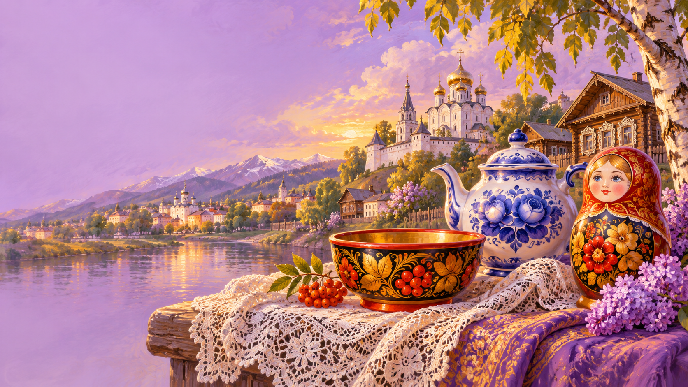
Classic ЕГЭ Reading Task 10 (matching headings to texts) — pick the right theme (A-G) for each short description. One theme is extra.
Russian traditions form a surprisingly thick layer under modern life. Most of them existed long before Christianity arrived in the tenth century. Pancake Week (Maslenitsa) is a farewell to winter: for seven days people eat blini — round golden pancakes that symbolise the sun — and on the final Sunday they burn a straw doll of winter on a huge bonfire. Easter (Paskha) brings a different food cycle: tall sweet bread called kulich, soft curd pyramids called paskha, and painted eggs that children tap against each other to see whose shell survives.
Summer belongs to Ivan Kupala, a solstice festival where young people jump over fires and float candle-wreaths down the river. In autumn the ritual calendar quiets down until the New Year — the biggest holiday of all. The President speaks on television just before midnight, the Kremlin chimes ring out, and families eat Olivier salad and open mandarins. Across all these festivals, three verbs come back again and again: to celebrate, to observe (a tradition), to pass down or to hand down (from grandparent to grandchild). They are the backbone of this whole topic in your Writing and Speaking.
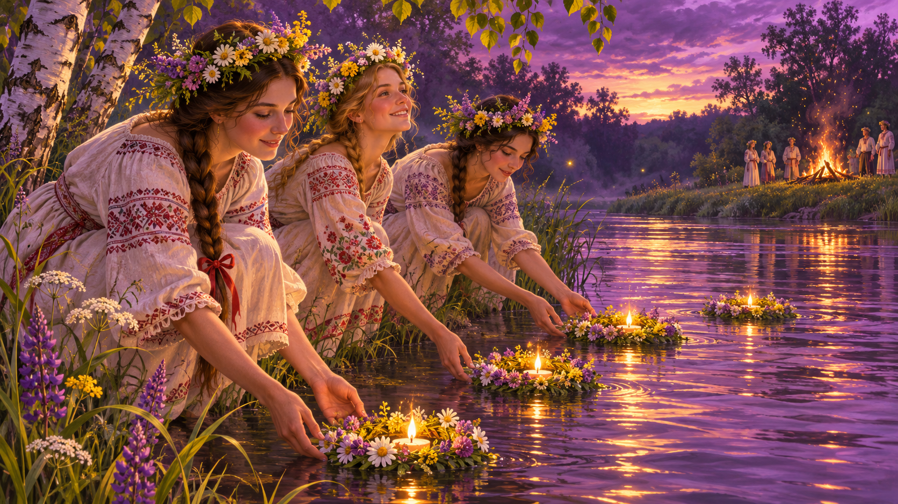
| Month · date | Festival | What people do | Food · symbol | Essay-ready fact |
|---|---|---|---|---|
| Jan 7 | Rozhdestvo · Orthodox Christmas | Church liturgy from midnight, carol singing (колядки), door-to-door blessings. | sochivo (grain porridge with honey), kutya | Russia celebrates Christmas on 7 January because the Orthodox Church follows the Julian calendar — 13 days behind the Gregorian one. |
| Jan 19 | Kreshchenie · Epiphany | Ice-hole bathing (крещенские купания) in a cross-shaped прорубь at -20 °C. | blessed water carried home | Over 2 million Russians plunge into icy water every year, in temperatures that can reach −30 °C. |
| late Feb – early Mar | Maslenitsa · Pancake Week | 7 days of pancakes, troika sleigh rides, snowball fights, burning the straw doll of winter on Sunday. | blini with honey, caviar, jam, condensed milk | Maslenitsa is older than Christianity in Russia — the Church simply absorbed the pre-Lenten pagan farewell to winter. |
| Mar 8 | Международный женский день | Men give flowers and mimosa branches to every woman they know: mother, teacher, colleague. | yellow mimosa, tulips | Though international, 8 March is more actively celebrated in Russia than in any Western country. |
| Apr/May | Paskha · Orthodox Easter | All-night service, egg-tapping game, blessing of kulich and творожная пасха. | kulich (tall cake), coloured eggs | Easter in Russia changes date every year — it follows the Julian calendar's lunar formula and can fall between 4 April and 8 May. |
| May 9 | День Победы · Victory Day | Parade on Red Square, Immortal Regiment march, St George's ribbon on jackets. | front-line porridge (каша) | The parade features WWII-era vehicles alongside the newest hardware; the Immortal Regiment march involves over 10 million people in 100 cities. |
| late May | Last Bell · Последний звонок | 11th-graders ring the last bell for younger pupils, girls in white aprons. | white carnations, roses for teachers | The ritual of a tiny first-grader riding a graduate's shoulder with a brass bell is almost unchanged since 1948. |
| Jun 6 | Pushkin Day · Russian Language Day | Reading Pushkin aloud in squares, open-air poetry. | — | Chosen because 6 June 1799 is Pushkin's birthday; UNESCO also recognises it as Russian Language Day. |
| Jun 21–23 (summer solstice) | Ivana Kupala | Jumping over bonfires, floating candle-wreaths downstream, searching for the mythical fern-flower. | wreaths of herbs | Pre-Christian fire-and-water festival; the "fern-flower" exists only in folklore — ferns do not actually bloom. |
| mid-June (White Nights) | Scarlet Sails · Алые паруса | Petersburg graduates fill the Neva embankments; a tall ship with scarlet sails crosses the river at midnight. | — | Named after Alexander Grin's 1923 novel; today it draws over 1 million spectators and is the world's largest open-air graduation. |
| Jul (first weekend after Trinity) | Krasnaya Gorka · Red Hill | Traditional day for weddings and spring round-dances (хороводы). | painted eggs, pies | Pre-Christian spring-wedding festival absorbed into Orthodox Red Hill Sunday. |
| Dec 31 – Jan 8 | Новый год · Russian New Year | Olivier salad, Soviet-era films (Ирония судьбы), President's address 23:55, chimes at midnight, letter under the tree from Дед Мороз. | Olivier, mandarins, Советское шампанское | Russians celebrate New Year twice: on 31 December and again on 13 January ("Старый Новый год"), because of the Julian–Gregorian calendar gap. |
In ЕГЭ Writing Task 38, Criterion К3 (lexis) rewards precise, idiomatic language. A well-placed Russian proverb with a correct English equivalent is almost a guaranteed point if it fits the argument. The trick is to use it as a bridge between two paragraphs, not as decoration. Try this template: «As a Russian proverb says, "…", which perfectly captures the point that …». Then paraphrase the proverb in your own words — that's what examiners want to see.
Russian proverbs usually fall into four groups: work & effort («Без труда…», «Волка ноги кормят», «Повторение — мать учения»); caution & wisdom («Тише едешь, дальше будешь», «Семь раз отмерь», «Утро вечера мудренее»); home & family («В гостях хорошо, а дома лучше», «Яблоко от яблони»); and consequences («Что посеешь, то и пожнёшь», «Куй железо, пока горячо»). Memorise one from each group — four well-placed proverbs is enough to signal a strong lexical range.
Russian is the only state language of the whole Federation, but inside the twenty-two republics another thirty-seven languages hold the status of co-official: street signs, government documents and school certificates appear in two scripts side by side. In total, scholars count more than one hundred and fifty native languages, from Tatar — spoken by five million people around Kazan — to Evenki, a reindeer-herder language of the Siberian Far East with fewer than five thousand speakers left.
These languages fall into four main families. Turkic covers Tatar, Bashkir, Chuvash and Yakut. Mongolic gives us Buryat (near Lake Baikal) and Kalmyk (Elista — Europe's only Buddhist capital). Nakh-Dagestanian, concentrated in the North Caucasus, contains over forty languages in Dagestan alone. The Uralic family (Komi, Udmurt, Mari) forms a northern belt from the Baltic to the Urals. Some are thriving: Tatar has newspapers and TV, and the Yakut film industry is one of Russia's most lively regional cinemas. Others are endangered — UNESCO lists sixteen Russian minority languages as critically at risk, and republics now run immersion kindergartens to save them.
Russia is enormous. It covers more than seventeen million square kilometres, borders fourteen countries and spans eleven time zones — when the sun sets over Kaliningrad on the Baltic, children in Kamchatka are already brushing their teeth for school the next morning. The country is officially divided into eighty-nine federal subjects: twenty-two republics, nine territories, forty-six provinces and others.
Geographically, Russia is a story of belts. The tundra runs along the Arctic coast — treeless, frozen most of the year, with reindeer herders and polar nights. South of it lies the taiga, the largest forest belt in the world. Further south again begins the steppe, the open grassland that once belonged to nomadic peoples. Mountain ranges frame the country: the Caucasus in the south (with Mt Elbrus, 5,642 m — the highest peak in Europe), the Urals dividing Europe and Asia, and the Altai in Siberia.
The most unusual places are often remote: the volcanic peninsula of Kamchatka with its 300 volcanoes, Lake Baikal (the deepest and oldest freshwater lake on Earth, holding one fifth of the world's unfrozen fresh water), the Kola Peninsula with its 200 nights of aurora a year, and Kaliningrad — a tiny exclave on the Baltic that produces 90% of the world's amber. For your essay, pick two or three of these and bring them to life.
If you want to understand Russia beyond Moscow and St Petersburg, go to a small town. Within a two-hundred-kilometre radius north-east of the capital lies the Golden Ring — a loop of eight ancient towns first described by the critic Yuri Bychkov in 1967. The best known is Suzdal, which has fewer than ten thousand inhabitants but more than fifty churches, two monasteries and a wooden-architecture museum. Its July Cucumber Fair draws crowds from all over central Russia.
Vladimir, the former capital of medieval Rus, keeps its stone Golden Gate from 1164 and the Assumption Cathedral where grand princes were crowned. Further north, Yaroslavl celebrated its millennium in 2010 and is a UNESCO heritage site. Even tinier are the "character towns": Myshkin, with just 5,500 people, built an entire tourist industry around a legend about a mouse that woke a sleeping prince. Plyos on the Volga was Isaac Levitan's favourite painting spot. Kolomna near Moscow is famous for its red-brick kremlin and pastila — a traditional apple candy whose recipe was almost lost in the Soviet era.
What all these towns share is the vocabulary you need for Writing and Speaking: quaint, cobbled, whitewashed, provincial, heritage site, artisan. For an essay, pick two towns and contrast them with Moscow or SPb — that's an easy K2 (organisation) win.
Rule: no article with town names, the with Golden Ring, river names (the Volga), mountain ranges (the Urals).
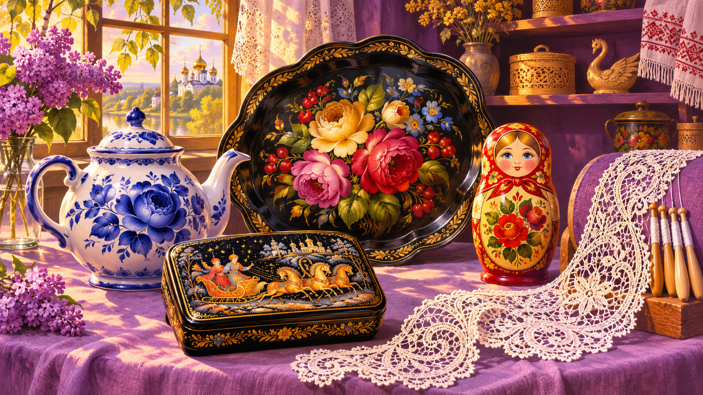
Each traditional Russian craft is tied to one town, one colour palette and one material. Khokhloma, born in the forest villages near Nizhny Novgorod in the seventeenth century, is wooden tableware painted red, black and gold — the "gold" is a chemical trick with aluminium powder, linseed oil and a hot oven. Gzhel, from a village of the same name near Moscow, is porcelain painted in cobalt blue on a white glaze, fired twice; its bouquets, birds and winter landscapes have been copied worldwide.
Palekh lacquer miniatures — tiny fairy-tale scenes painted in gold leaf on papier-mâché boxes with a deep black background — only appeared in the 1920s, when former icon-painters had to find a new subject after the revolution. Zhostovo trays, from a village in the Moscow Oblast, started in the nineteenth century: metal trays hand-painted with a central floral bouquet, each flower built from up to twenty brushstrokes. Vologda lace is woven with up to sixty wooden bobbins called коклюшки, producing geometric white-on-white snowflakes. Pavlovo Posad shawls are hand-printed woollen shawls with huge flower bouquets. And of course the matryoshka — the nested wooden doll from Sergiev Posad — was invented only in the 1890s but has become Russia's single most recognisable souvenir.
For your essay, remember the key vocab: craftsmanship, handmade, to carve, to glaze, pattern, brushstroke, lacquer, ceramics, embroidery, bobbin lace.
Rule: when describing a traditional craft process, English prefers the passive — «the bowl is turned on a lathe» — because the process matters more than the person.
Speaker A. I grew up in Suzdal, and until I moved to Moscow for university I honestly thought every Russian town had fifty wooden churches and smelt of cucumbers in July. Only here, in the capital, I realised how unusual my hometown is — and now I visit it every single holiday.
Speaker B. People always ask me, "Which Russian craft is the hardest to learn?" I'd say Palekh miniatures. You spend five years at the school before anyone lets you touch a real box. Compare that to Khokhloma — a talented student can start painting after one year.
Speaker C. Last February I finally crossed Baikal on ice. We drove from Listvyanka to Olkhon Island on an official ice road. The ice was so transparent that you could see fish swimming eighty centimetres below your wheels — and that was the most frightening and beautiful thing I've ever experienced.
Speaker D. My grandmother spoke Chuvash at home and taught me to count in it. Nowadays I live in Moscow and only use Russian, but every time I visit my relatives in Cheboksary I switch back. It's a kind of memory stored in your mouth, not your head.
Speaker E. We eat so many pancakes during Maslenitsa week that by Sunday I honestly cannot look at butter. But I still love the whole thing — especially burning the straw doll of winter on the last evening. It really does feel like saying goodbye to the cold.
Speaker F. I'm not a religious person, but I love visiting old Russian monasteries. The silence inside those white-stone walls has nothing to do with faith — it's about centuries of people whispering in the same place. You walk out calmer than you went in.
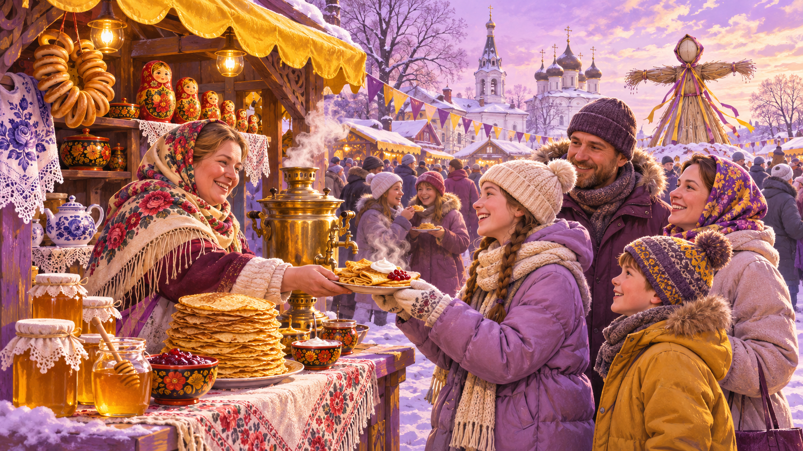
Hello and welcome to «Russia in Season». I'm Olga Petrova, and today we're talking about Maslenitsa — Pancake Week — one of the oldest and most beloved traditions in Russia. Maslenitsa is actually a pre-Christian festival that marks the end of winter and the arrival of spring. It takes place during the last week before the Orthodox Lent, which means the date changes every year — usually late February or early March.
Each of the seven days has its own name. Monday is called «Встреча», the welcoming day. Tuesday is «Заигрыш» — the day of games, when young people meet. Wednesday is «Лакомка», the sweet-tooth day, when a son-in-law visits his mother-in-law for pancakes. The real highlight comes on Sunday, called «Прощёное воскресенье» or Forgiveness Sunday — people apologise to one another and the straw doll of winter is burnt on a huge bonfire.
And of course — the pancakes. The round golden blini are not just a food, they are a symbol of the sun. A good Russian family eats dozens over the week: with butter and sour cream, with red caviar, with condensed milk, with honey, with jam. Even today, when fewer people go to church, almost everyone bakes blini for Maslenitsa. In Suzdal and Yaroslavl the festival has turned into a huge open-air event with troika sleigh rides, folk choirs and pancake-eating competitions. If you ever visit Russia in late winter, don't miss it.
— Hello, I'd like some information about a trip to Lake Baikal.
— Of course! When are you planning to go?
— Probably February. Is it a good time?
— Yes, actually February is the magic season. The lake is completely frozen — the ice can be up to a metre and a half thick. Visitors can walk on it, drive across it, even cycle.
— Really? How thick does it have to be before cars can drive?
— Around seventy centimetres is the safety minimum, but by mid-February it's usually much more. There are official ice roads from Listvyanka to Olkhon Island.
— Olkhon — is that the biggest island?
— Yes, it's the fourth-largest lake island in the world. The main village is Khuzhir, where you'll find homestays, small restaurants and the famous Shaman Rock. The local Buryat people see it as a sacred place.
— Interesting. And what about activities?
— Hovercraft tours across the ice, visits to the ice caves on Olkhon's north coast, dog-sled rides, hot banya after a day outside. If you're lucky, you can even see methane bubbles frozen inside the ice.
— Sounds amazing. How do we get there from Moscow?
— Fly to Irkutsk — six hours — then it's a four-hour drive to Listvyanka or six hours to Olkhon.
— Can you organise the whole package?
— Of course. Four days with transfers, meals and two excursions costs around sixty-five thousand roubles per person.
— Perfect, I'll check my dates and get back to you tomorrow.
— Alexander, you've been painting Palekh miniatures for twenty-two years. How did you start?
— I was born in Palekh village, so I literally grew up in a workshop. My father was an icon-painter before the revolution, and after 1924 he joined the first Palekh artel. I went to the Palekh Art School at sixteen — it's still the only school in the world that teaches this exact technique.
— How long does one box take?
— A small round pin maybe two weeks. A large casket with a battle scene can take four months. Everything is painted with squirrel-hair brushes made of a few hairs each, and we grind our own tempera from egg yolk and natural pigments.
— And the themes — are they always folk tales?
— Mostly, yes. Pushkin's fairy tales, bylinas, Russian winter scenes, Troika. The black background is non-negotiable; it's what makes the gold stand out.
— Are there many young painters today?
— Not enough. In the 1980s Palekh had about four hundred artists; now we're down to seventy. Young people don't want to spend five years learning before they can earn a living.
— What would you say to a teenager considering it?
— Come, try it, paint one small box. If your hand loves it, it will stay with you. Palekh is not a job — it's a way of looking at the world.
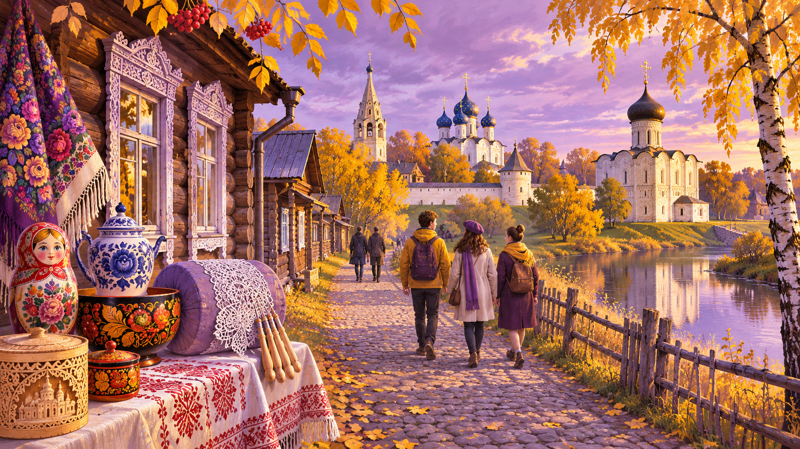
1North-east of Moscow, within a two-hundred-kilometre radius, lies a cluster of ancient towns that Russians affectionately call the Golden Ring. The nickname first appeared in 1967, in a series of newspaper essays by the critic Yuri Bychkov. He drove in a loop between eight small towns — Sergiev Posad, Pereslavl-Zalessky, Rostov Veliky, Yaroslavl, Kostroma, Ivanovo, Suzdal and Vladimir — and came back convinced that each stop was a jewel.
2What makes the Ring unusual is not its grandeur but its scale. These are places where the entire historic centre fits inside a kilometre. In Suzdal, which has fewer than ten thousand inhabitants, there are more than fifty churches, two monasteries and a wooden-architecture museum, all within walking distance. Local shops still sell the same hand-pickled cucumbers that are celebrated at the town's July festival.
3Vladimir, the former capital of medieval Rus, keeps the stone Golden Gate built in 1164 and a cathedral where grand princes were crowned. Yaroslavl, further north, celebrated its millennium in 2010 and is a UNESCO World Heritage site. Smaller Myshkin, with just five and a half thousand people, has turned a local legend about a mouse that woke a sleeping prince into an entire tourist industry — complete with a mouse museum, mouse hotel and mouse-shaped bread.
4Why do these towns survive? Partly because of Soviet-era protection laws that froze the historic centres. Partly because new generations of young urban Russians, tired of big-city rush, are moving back to open bakeries, pottery studios and small B&Bs. The Ring is not a museum frozen in time — it is a quiet, living alternative to Moscow.
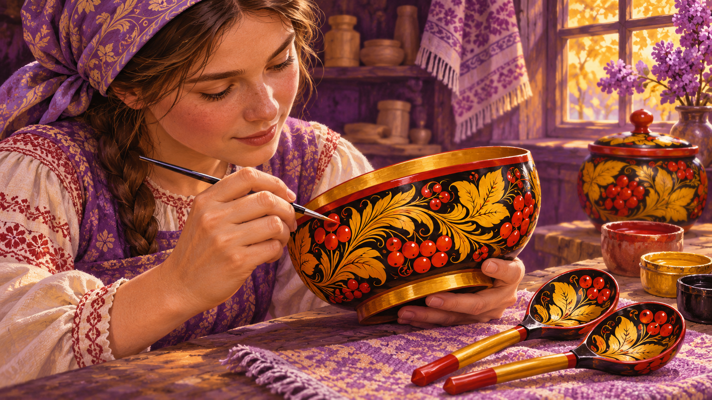
1Walk into any Russian souvenir shop and you will meet it: a bowl painted red and black, covered in curling grasses and tiny berries, with details that gleam like gold. This is Хохлома, the wooden tableware tradition born in the forest villages near Nizhny Novgorod in the seventeenth century.
2What looks like gold is actually a small miracle of chemistry. A craftsman turns a bowl on a lathe, dries it, and covers the raw wood with linseed oil and clay primer. Then — the surprising step — a thin layer of aluminium powder is rubbed into the surface. At this stage the piece is dull silver.
3The painter sits with a squirrel-hair brush and works freehand. There are no stencils. The two classic styles are «верховое письмо» (over-painting), where red and black grasses are painted directly on the silver, and «фоновое письмо» (background painting), where the pattern is left silver and the background is filled in with colour.
4The finished bowl goes into the oven. At around 150 degrees Celsius the oil hardens and turns yellow, and suddenly the silver powder beneath looks exactly like gold. The bowl can now be used for food, washed and even heated. Modern Khokhloma masters work in two towns, Semyonov and Koverino, and still train apprentices through a traditional four-year course.
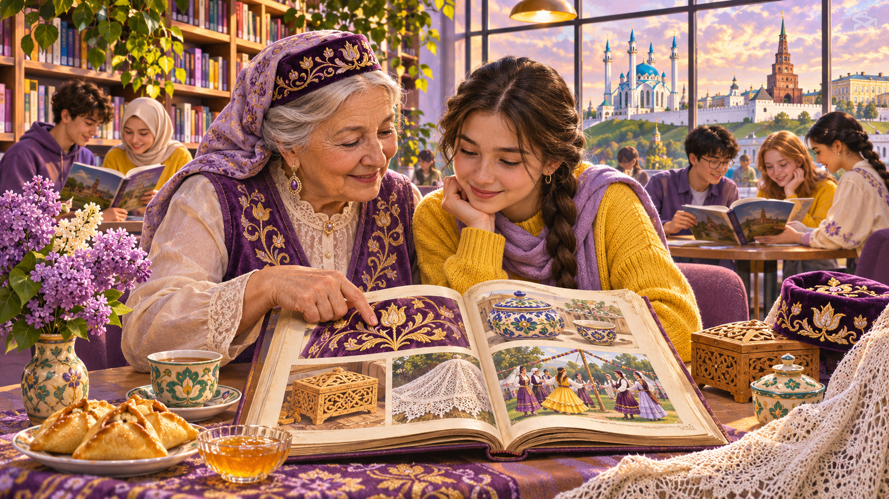
1Russia is a country of a single state language, Russian, and more than one hundred and fifty native ones. Thirty-seven of these are co-official in their republics, which means that government documents, schools and street signs appear in two languages — the regional one and Russian.
2The languages fall into four main families. Turkic languages, including Tatar, Bashkir, Chuvash and Yakut, are spoken by around nine million people. Mongolic languages like Buryat and Kalmyk reach deep into the steppe. The Nakh-Dagestanian family in the North Caucasus contains more than forty languages inside Dagestan alone. Finally, Uralic languages such as Komi, Udmurt and Mari form a northern belt from the Baltic to the Urals.
3Some of these languages are thriving. Tatar has newspapers, novels, television channels and a strong presence online. Yakut, spoken in the vast republic of Sakha, produces its own cinema — the Yakut film industry has become one of the most lively regional cinemas in Russia.
4Others, however, are in danger. Evenki, the language of reindeer herders in the Far East, has fewer than five thousand speakers. UNESCO lists sixteen Russian minority languages as critically endangered. Schools in the republics are experimenting with "immersion kindergartens" — groups where children hear only Komi or Chuvash from the age of three — in the hope that the next generation will keep the languages alive.
Read the sentence · derive the correct form from the ROOT given in brackets.
Choose the word that best fits the gap.
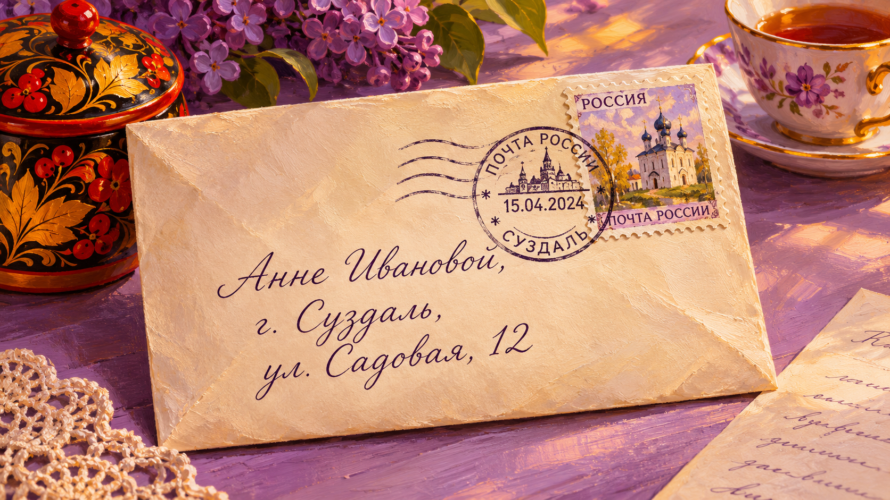
| Criterion | Pts | What examiner wants |
|---|---|---|
| K1 · Решение коммуникативной задачи | 2 | Все 3 ответа + 3 вопроса даны · правильная форма вопроса · стилистически нейтральный тон · 100–140 слов (−1 pt при 90–99 / 141–154). |
| K2 · Организация текста | 2 | Город+дата · обращение · благодарность за письмо · ссылка на предыдущий контакт · 3–4 абзаца · прощание · подпись на отдельной строке. |
| K3 · Языковое оформление | 2 | Разнообразие грамматики (Present/Past/Perfect/модальные) · 2+ linkers (although, in addition, by the way) · 2–3 topic nouns из vocab-паков · не более 2 ошибок, нарушающих понимание. |
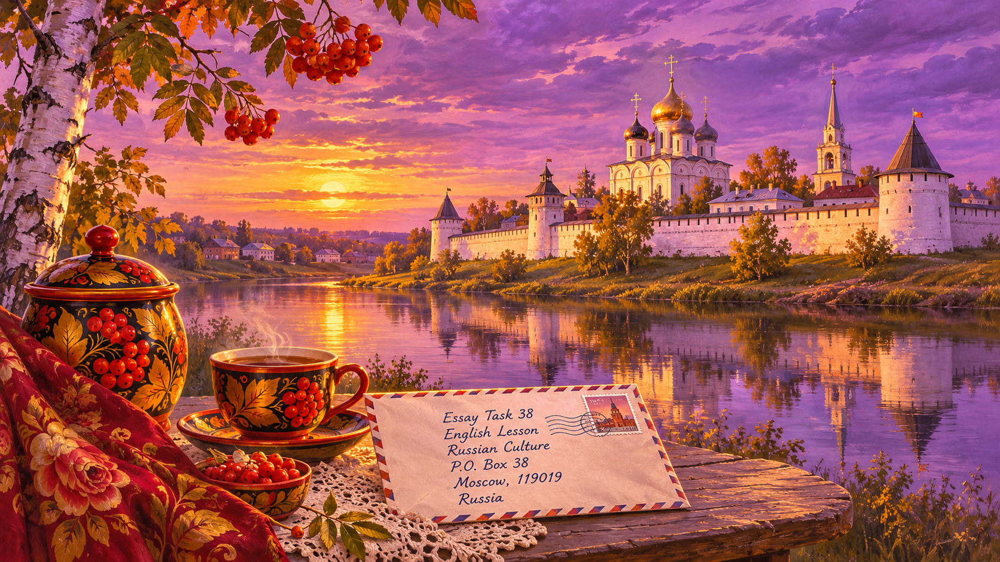
| Criterion | Pts | What examiner wants |
|---|---|---|
| K1 · Решение коммуникативной задачи | 3 | Все 5 пунктов плана раскрыты · своё мнение + 2–3 аргумента · противоположное + 1–2 · контр-аргумент · вывод · 200–250 слов. |
| K2 · Организация текста | 3 | 5 абзацев в правильной последовательности · logical linkers · abstract nouns (preservation, modernisation, diversity). |
| K3 · Лексика | 3 | Topic-vocab из vocab-паков (heritage, craftsmanship, infrastructure, metropolis, multilingual, indigenous). |
| K4 · Грамматика | 3 | Mixed tenses, модальные, пассив, conditional II, complex sentences (although / even though / despite + Ving). |
| K5 · Орфография и пунктуация | 2 | Не более 2 ошибок, не нарушающих понимание. |
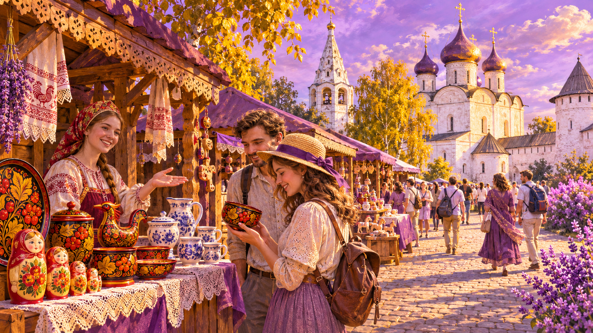
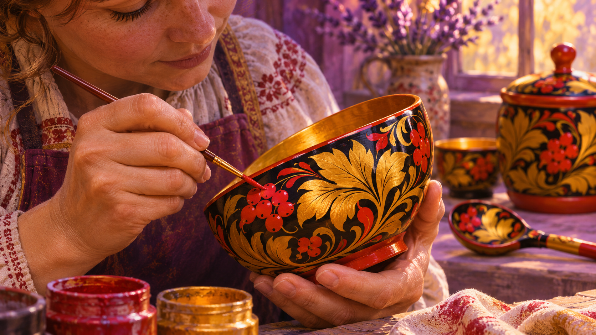
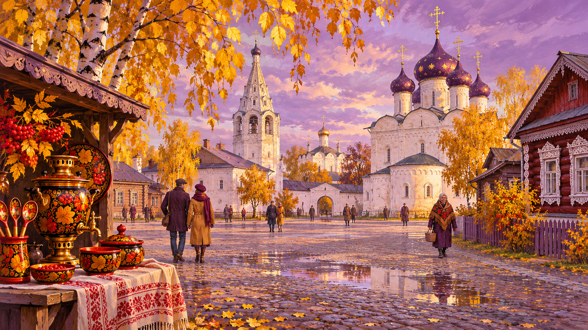
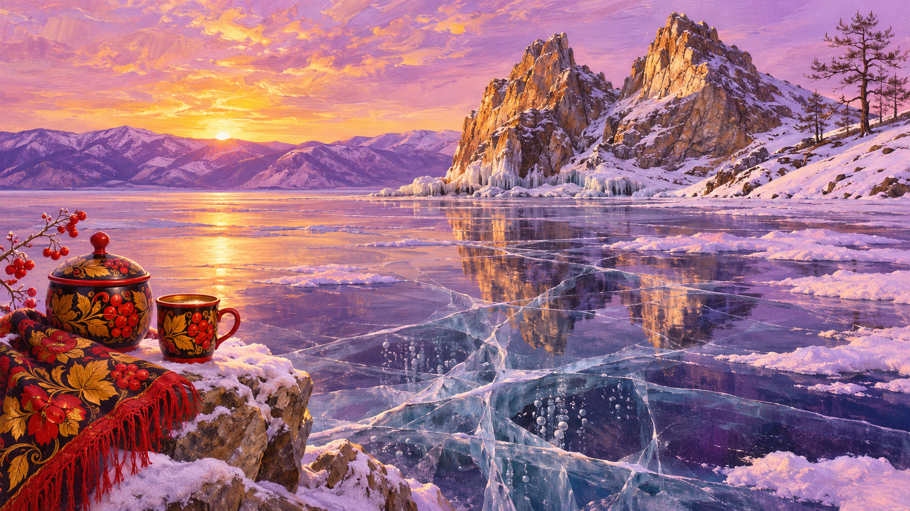
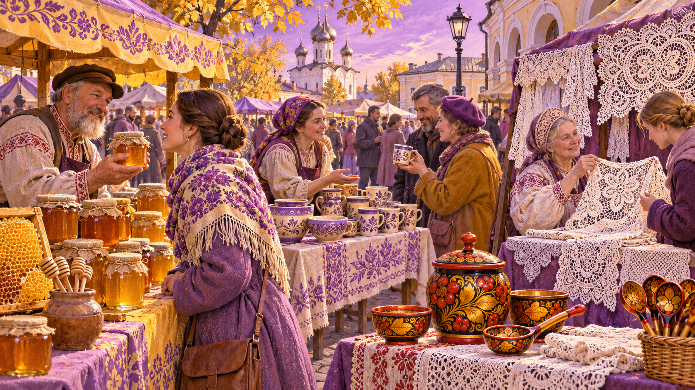
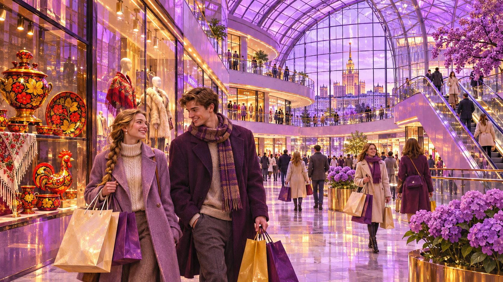